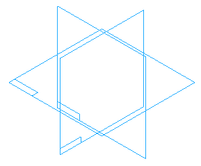
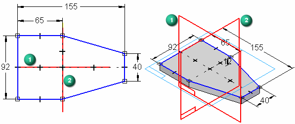
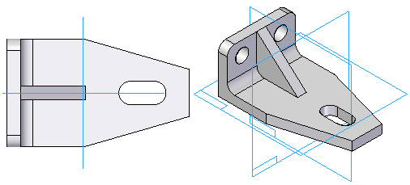

Part modeling: Tips for getting started
When constructing a 3D model in Solid Edge, it is helpful to evaluate the basic shape of the part, and develop a plan as to how you want to construct the model.

You should consider the following questions when starting a new model:
-
What is the best sketch for the first feature on the part?
-
Which reference plane should it be drawn on?
-
Are there symmetric features on the part?
Constructing the base feature
The first feature you create for a part or sheet metal model is called the base feature. Several commands are available for creating base features, but one thing they have in common is that they are sketch-based features.
You construct a sketch-based feature by drawing a closed sketch region (1) on a reference plane (2).

Reference planes
A reference plane is a flat surface that is typically used for drawing 2D sketches in 3D space. Although the size of a reference plane is theoretically infinite, it is displayed at a fixed size to make it easier to select and visualize.
Three default, or base reference planes, are available in Solid Edge part and sheet metal documents for defining the base feature.

Choosing the best sketch for the base feature
When evaluating the part you want to construct, the sketch for the base feature should generate as much of the basic shape of the part as possible. Most models present several choices for constructing the sketch for the base feature, but often one alternative is better than others.
As you gain experience, it becomes easier to see the best choice. In the example model, you could construct the base feature using each of the three sketches shown.

-
Sketch 1
The L-shaped sketch of the model is a good choice, but would require extra features to finish defining the tapered end of the model. In many cases this could be the best choice, especially when working with standard shapes and extrusions.
-
Sketch 2
The rectangular sketch would require many extra features to remove the material around the stiffening rib and tapered end of the model. This would be a poor choice for this model.
-
Sketch 3
For this model, this would be the best choice. It defines the basic length and width of the model and includes the tapered end. Two additional protrusion features complete the basic shape of the part. A hole feature, a cutout feature, and a round feature complete the part.

Choosing the best reference plane
After you decide on the best sketch to use for the base feature, you should decide which reference plane you want to draw the profile on.
As discussed earlier, there are three base reference planes you can use for the first feature. These planes are oriented to the top, front, and right views. The three base reference planes intersect at the exact center, or global origin, of the model space.
When choosing the reference plane, you can consider how the finished part will be displayed in the graphic window, or how it will be arranged in the assembly or the drawing.
The default view orientation in the graphic window is the dimetric view, so orienting the sketch for the base feature such that the finished part is easy to visualize in the dimetric view is a good approach.
The following examples illustrate the results of using the Top (1), Front (2), and Right (3) reference planes to draw the first sketch. For this part, using the Top reference plane (1) results in a part that is easiest to visualize in the dimetric view.

As your modeling skills increase, and when modeling parts in the context of the assembly, choosing the best reference plane becomes less of a concern. You can use the Rotate command to rotate the graphic window to an easy to visualize orientation.
Taking advantage of part symmetry
Because the three base reference planes are fixed (they can not move), when modeling symmetric parts, you should also use the base reference planes to take advantage of symmetric features on the part. For example, when drawing the sketch for the base feature, you can use dimensions and relationships to symmetrically orient the sketch about the Front (1) and Right (2) reference planes.

Orienting the sketch for the base feature symmetrically with respect to the base reference planes makes it easier to construct the rest of the model because you can also use the base reference planes to symmetrically orient the subsequent features.

How do I
Construct a protrusion or cutout (ordered)Define the extent of an extruded feature
Construct a base feature
Construct a cutout (ordered)
Construct a hole
Construct a hole (ordered)
Construct a hole on a cylinder
Construct an extrusion: base feature
Construct an extrusion or cutout: subsequent features
Construct a protrusion or cutout: model face
Construct a Normal Protrusion
Construct a Normal Cutout (Part Environment)
Finish the Feature
Examples: Constructing Protrusions With the Finite Option
Examples: Constructing Protrusions With the Through All Option
Examples: Constructing Protrusions With the Through Next Option
Examples: Constructing Cutouts With the Through All Option
Examples: Constructing Cutouts With the Through Next Option
Examples: Constructing Cutouts With the Finite Option
Learn more
Part modeling workflow overviewLook up more details
Extrude command (synchronous)Extrude command bar (synchronous)
Extrude command (ordered)
Extrude command bar (ordered)
Cut command
Cut command bar
Demo: Create protrusion or cutout using keypoint
Normal Protrusion command
Normal Protrusion command bar
Normal Cutout command (Part environment)
Normal Cutout command bar (Part environment)